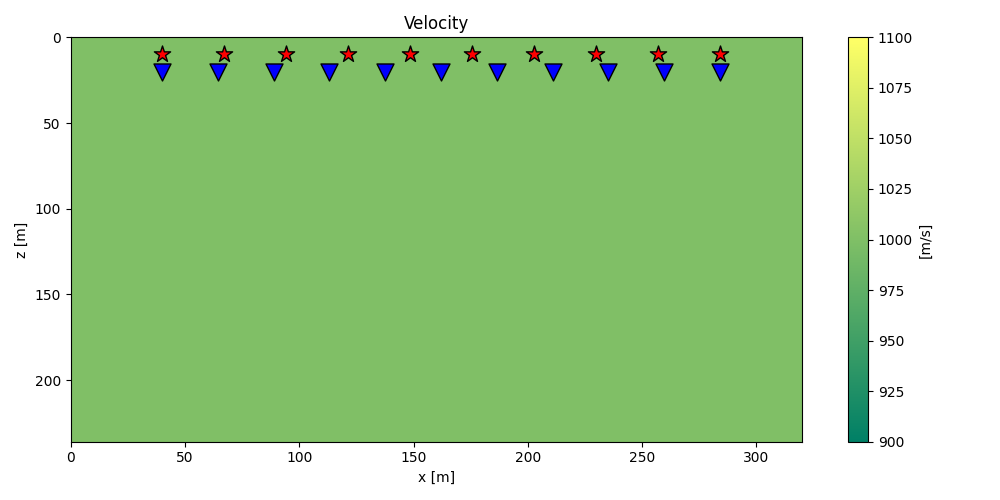
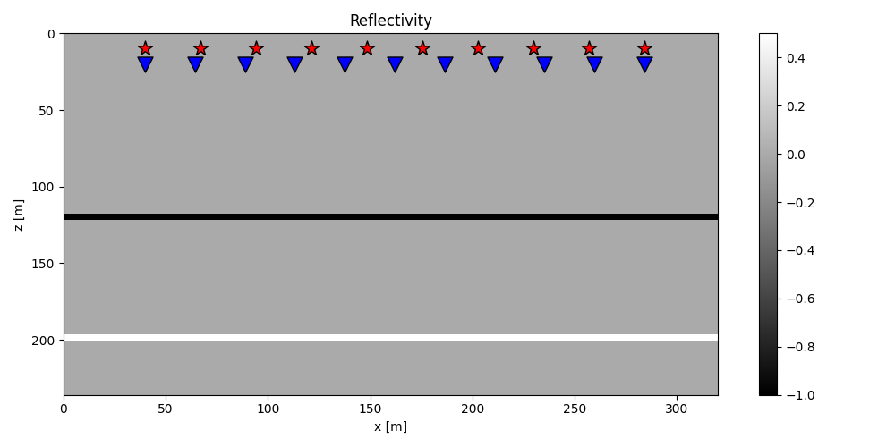
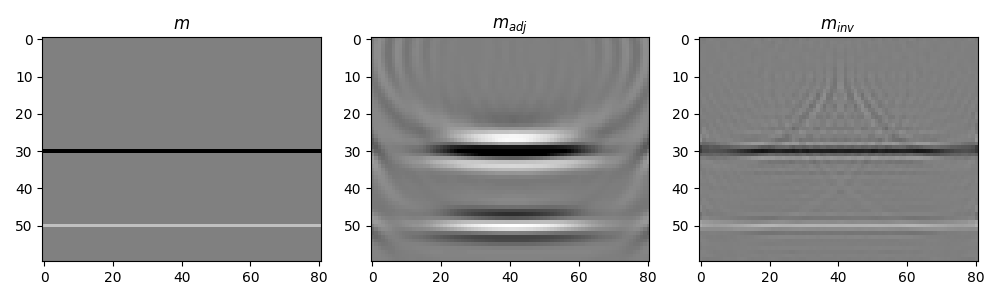
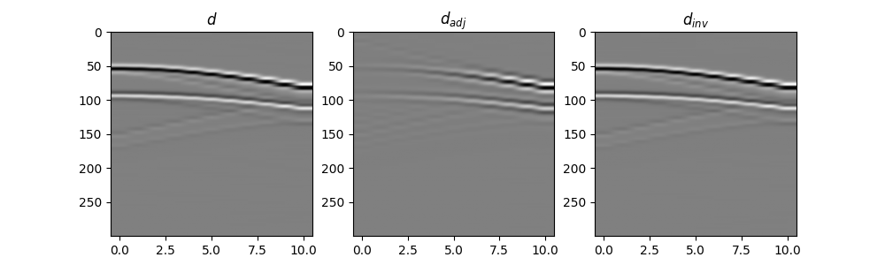
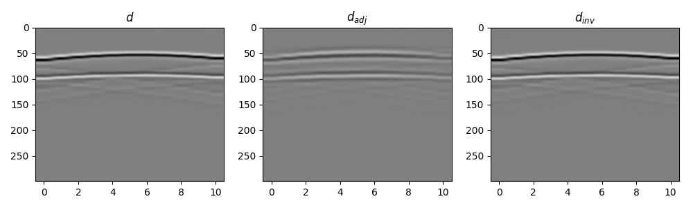

Note
Go to the end to download the full example code.
Least-squares Migration#
Seismic migration involves the manipulation of seismic data to create an image of subsurface reflectivity.
We solve the inverse of the demigration operator to obtain accurate and detailed sub surface images. Regardless of the choice of the modelling operator (i.e., ray-based or full wavefield-based), the demigration/migration process can be expressed as a linear operator of such kind:
where \(m(\mathbf{x})\) is the reflectivity at every location in the subsurface, \(G(\mathbf{x}, \mathbf{x_s}, t)\) and \(G(\mathbf{x_r}, \mathbf{x}, t)\) are the Green’s functions from source-to-subsurface-to-receiver and finally \(w(t)\) is the wavelet. Ultimately, while the Green’s functions can be computed in many ways, solving this system of equations for the reflectivity model is what we generally refer to as Least-squares migration (LSM).
We can easily set up this problem where sources are distributed across different ranks,
and each pylops.waveeqprocessing.LSM is responsible for performing modelling
with the reflectivity at each rank in the subsurface. In a compact matrix-vector notation,
this problem can be written as:
where \(\mathbf{L}_i\) is a least-squares modelling operator, \(\mathbf{d}_i\) is the data, and \(m\) is the broadcasted reflectivity at every location on the subsurface.
In this tutorial, we will use the pylops_mpi.basicoperators.MPIVStack to perform
vertical stacking of LSMs and solve our problem.
import warnings
warnings.filterwarnings('ignore')
import numpy as np
from matplotlib import pyplot as plt
from mpi4py import MPI
from pylops.utils.wavelets import ricker
from pylops.waveeqprocessing.lsm import LSM
import pylops_mpi
np.random.seed(42)
plt.close("all")
rank = MPI.COMM_WORLD.Get_rank()
size = MPI.COMM_WORLD.Get_size()
Let’s start with a simple model with two interfaces, where sources are distributed across different ranks.
# Velocity Model
nx, nz = 81, 60
dx, dz = 4, 4
x, z = np.arange(nx) * dx, np.arange(nz) * dz
v0 = 1000 # initial velocity
kv = 0.0 # gradient
vel = np.outer(np.ones(nx), v0 + kv * z)
# Reflectivity Model
refl = np.zeros((nx, nz))
refl[:, 30] = -1
refl[:, 50] = 0.5
# Receivers
nr = 11
rx = np.linspace(10 * dx, (nx - 10) * dx, nr)
rz = 20 * np.ones(nr)
recs = np.vstack((rx, rz))
# Sources
ns = 10
# Total number of sources at all ranks
nstot = MPI.COMM_WORLD.allreduce(ns, op=MPI.SUM)
sxtot = np.linspace(dx * 10, (nx - 10) * dx, nstot)
sx = sxtot[rank * ns: (rank + 1) * ns]
sztot = 10 * np.ones(nstot)
sz = 10 * np.ones(ns)
sources = np.vstack((sx, sz))
sources_tot = np.vstack((sxtot, sztot))
if rank == 0:
plt.figure(figsize=(10, 5))
im = plt.imshow(vel.T, cmap="summer", extent=(x[0], x[-1], z[-1], z[0]))
plt.scatter(recs[0], recs[1], marker="v", s=150, c="b", edgecolors="k")
plt.scatter(sources_tot[0], sources_tot[1], marker="*", s=150, c="r", edgecolors="k")
cb = plt.colorbar(im)
cb.set_label("[m/s]")
plt.axis("tight")
plt.xlabel("x [m]"), plt.ylabel("z [m]")
plt.title("Velocity")
plt.xlim(x[0], x[-1])
plt.tight_layout()
plt.figure(figsize=(10, 5))
im = plt.imshow(refl.T, cmap="gray", extent=(x[0], x[-1], z[-1], z[0]))
plt.scatter(recs[0], recs[1], marker="v", s=150, c="b", edgecolors="k")
plt.scatter(sources_tot[0], sources_tot[1], marker="*", s=150, c="r", edgecolors="k")
plt.colorbar(im)
plt.axis("tight")
plt.xlabel("x [m]"), plt.ylabel("z [m]")
plt.title("Reflectivity")
plt.xlim(x[0], x[-1])
plt.tight_layout()
- 
- 
We create a pylops.waveeqprocessing.LSM at each rank and then push them
into a pylops_mpi.basicoperators.MPIVStack to perform a matrix-vector
product with the broadcasted reflectivity at every location on the subsurface.
# Wavelet
nt = 651
dt = 0.004
t = np.arange(nt) * dt
wav, wavt, wavc = ricker(t[:41], f0=20)
lsm = LSM(
z,
x,
t,
sources,
recs,
v0,
wav,
wavc,
mode="analytic",
engine="numba",
)
VStack = pylops_mpi.MPIVStack(ops=[lsm.Demop, ])
refl_dist = pylops_mpi.DistributedArray(global_shape=nx * nz, partition=pylops_mpi.Partition.BROADCAST)
refl_dist[:] = refl.flatten()
d_dist = VStack @ refl_dist
d = d_dist.asarray().reshape((nstot, nr, nt))
We calculate now the adjoint and model the data using the adjoint reflectivity as input.
We calculate the inverse using the pylops_mpi.optimization.basic.cgls
solver.
# Inverse
# Initializing x0 to zeroes
x0 = pylops_mpi.DistributedArray(VStack.shape[1], partition=pylops_mpi.Partition.BROADCAST)
x0[:] = 0
minv_dist = pylops_mpi.cgls(VStack, d_dist, x0=x0, niter=100, show=True)[0]
minv = minv_dist.asarray().reshape((nx, nz))
d_inv_dist = VStack @ minv_dist
d_inv = d_inv_dist.asarray().reshape(nstot, nr, nt)
CGLS
-----------------------------------------------------------------
The Operator Op has 71610 rows and 4860 cols
damp = 0.000000e+00 tol = 1.000000e-04 niter = 100
-----------------------------------------------------------------
Itn x[0] r1norm r2norm
1 -5.3094e-03 2.0251e+02 2.0251e+02
2 9.7670e-03 1.4050e+02 1.4050e+02
3 3.5811e-03 1.0987e+02 1.0987e+02
4 1.3698e-03 9.6759e+01 9.6759e+01
5 4.9262e-06 7.9870e+01 7.9870e+01
6 -3.6882e-03 6.5879e+01 6.5879e+01
7 1.6584e-03 5.5853e+01 5.5853e+01
8 -2.8358e-03 4.8932e+01 4.8932e+01
9 2.9706e-03 4.2731e+01 4.2731e+01
10 -4.7021e-03 3.8118e+01 3.8118e+01
11 -5.2286e-03 3.4431e+01 3.4431e+01
21 -3.1305e-03 1.5333e+01 1.5333e+01
31 -4.8777e-03 9.8278e+00 9.8278e+00
41 -6.3845e-03 6.8582e+00 6.8582e+00
51 -7.8539e-03 5.3510e+00 5.3510e+00
61 -1.0072e-02 4.6404e+00 4.6404e+00
71 -9.5400e-03 3.9842e+00 3.9842e+00
81 -1.2782e-02 3.4685e+00 3.4685e+00
91 -1.4205e-02 3.1071e+00 3.1071e+00
92 -1.4036e-02 3.0712e+00 3.0712e+00
93 -1.3773e-02 3.0286e+00 3.0286e+00
94 -1.3422e-02 2.9861e+00 2.9861e+00
95 -1.3252e-02 2.9563e+00 2.9563e+00
96 -1.3040e-02 2.9362e+00 2.9362e+00
97 -1.2860e-02 2.9046e+00 2.9046e+00
98 -1.2687e-02 2.8757e+00 2.8757e+00
99 -1.2546e-02 2.8528e+00 2.8528e+00
100 -1.2389e-02 2.8342e+00 2.8342e+00
Iterations = 100 Total time (s) = 1.27
-----------------------------------------------------------------
if rank == 0:
# Visualize
fig1, axs = plt.subplots(1, 3, figsize=(10, 3))
axs[0].imshow(refl.T, cmap="gray", vmin=-1, vmax=1)
axs[0].axis("tight")
axs[0].set_title(r"$m$")
axs[1].imshow(madj.T, cmap="gray", vmin=-madj.max(), vmax=madj.max())
axs[1].set_title(r"$m_{adj}$")
axs[1].axis("tight")
axs[2].imshow(minv.T, cmap="gray", vmin=-1, vmax=1)
axs[2].axis("tight")
axs[2].set_title(r"$m_{inv}$")
plt.tight_layout()
fig2, axs = plt.subplots(1, 3, figsize=(10, 3))
axs[0].imshow(d[0, :, :300].T, cmap="gray", vmin=-d.max(), vmax=d.max())
axs[0].set_title(r"$d$")
axs[0].axis("tight")
axs[1].imshow(d_adj[0, :, :300].T, cmap="gray", vmin=-d_adj.max(), vmax=d_adj.max())
axs[1].set_title(r"$d_{adj}$")
axs[1].axis("tight")
axs[2].imshow(d_inv[0, :, :300].T, cmap="gray", vmin=-d.max(), vmax=d.max())
axs[2].set_title(r"$d_{inv}$")
axs[2].axis("tight")
fig3, axs = plt.subplots(1, 3, figsize=(10, 3))
axs[0].imshow(d[nstot // 2, :, :300].T, cmap="gray", vmin=-d.max(), vmax=d.max())
axs[0].set_title(r"$d$")
axs[0].axis("tight")
axs[1].imshow(d_adj[nstot // 2, :, :300].T, cmap="gray", vmin=-d_adj.max(), vmax=d_adj.max())
axs[1].set_title(r"$d_{adj}$")
axs[1].axis("tight")
axs[2].imshow(d_inv[nstot // 2, :, :300].T, cmap="gray", vmin=-d.max(), vmax=d.max())
axs[2].set_title(r"$d_{inv}$")
axs[2].axis("tight")
plt.tight_layout()
- 
- 
- 
To run this tutorial with our NCCL backend, refer to Least-squares Migration with NCCL tutorial in the repository.
Total running time of the script: (0 minutes 2.958 seconds)